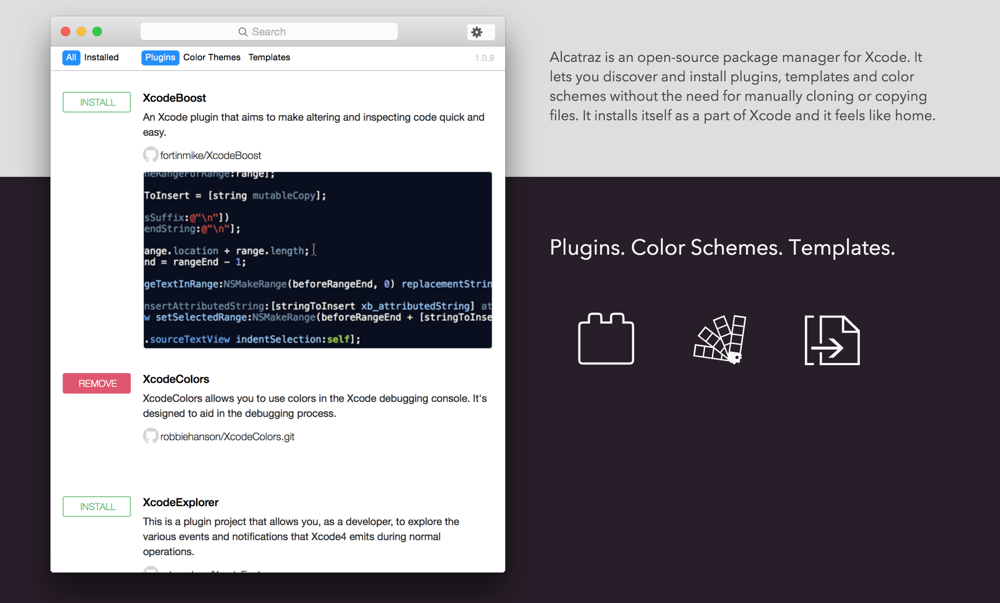
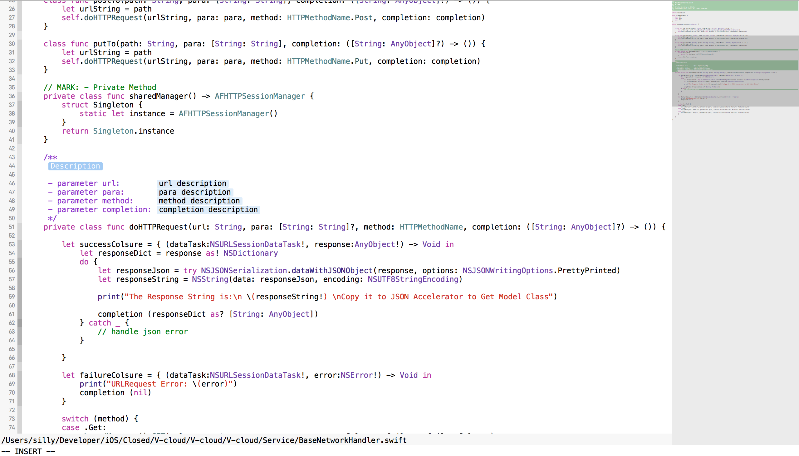

Xcode插件
Alcatraz
Alcatraz 是一个开源的 Xcode 包管理工具，包管理工具的好处就不用安利了。使用 Alcatraz 带来的便利，自己体验下就知道了。安装以及使用我觉得自行参考官方的说明是最好的了。

Xvim
总的来说，我是一个 vim 爱好者，所以有时候会很想把 vim 下的一些使用体验延续到 Xcode 开发中，比如使用 hjkl 快速在代码中移动，以及其它各种操作，Xvim 就很好的基本上满足了我的需求。Xvim 还有几个附加的命令可以帮助你编译，运行你的项目。
几个特殊命令
2
3
:make #相当于 command-B
:xhelp #打开光标所在位置的快速帮助遇到的坑
我在 Xcode7.1 下，使用 Alcatrz 无法成功安装，找到的一个解决办法是自己下载 Xvim 在
GitHub 上的工程，自己编译运行一下即可安装成功，重启 Xcode 后便能生效。
SCXcodeMinimap
对于使用过 Sublime Text 的人来说，minimap 的特性一定不会陌生，SCXcodeMiniMap 就是一个这样的插件，如果你喜欢 minimap 特性一定不要错过。
VVDocumenter-Xcode
VVDocumenter-Xcode 是人称 猫神 的大牛开发维护的一个快速文档注释插件，支持 OC 还有 swift。
最后附效果图一张
